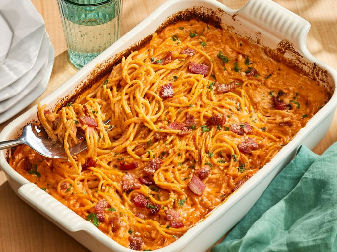

Creamy Bacon Pasta Bake

With minimal prep and no stovetop boiling required, this hearty, flavor-packed dinner comes together in just over an hour.
Whether you’re craving a cozy family meal or a fuss-free dish that’s sure to impress guests, this pasta bake has you covered.
Recipe Information
- Prep Time: 10 minutes
- Cook Time: 1 hour
- Total Time: 1 hour and 10 minutes
- Servings: 6 servings
Ingredients
- 8 ounces of thick-cut bacon, chopped
- 1 yellow onion, finely chopped
- 1/4 cup of tomato paste
- 1/2 teaspoon of crushed red pepper
- 3 cups chicken broth
- 2 cups heavy whipping cream
- 1/2 dry white wine
- 1 tablespoon of kosher salt
- 1 cup freshly grated Parmigiano-Reggiano cheese, divided
- 1 pound package spaghetti
- 1 tablespoon finely chopped fresh flat-leaf parsley
Directions
- Gather all the ingredients
- Preheat oven to 475 degrees F (245 degrees C). Scatter bacon evenly over the bottom of a 13-x-9-inch baking dish.
Bake in the preheated oven, stirring twice during cooking, until bacon is crispy and fat has rendered, 20 to 25 minutes.
Remove from the oven and transfer bacon to a small paper-towel-lined plate and set aside.
Reduce oven temperature to 425 degrees F (220 degrees C).
- Remove all but 2 tablespoons of the bacon fat from the baking dish. Add onion, tomato paste, and crushed red pepper to
reserved hot bacon fat in the baking dish and stir until onion is well coated in tomato paste.
- Add chicken broth, cream, wine, salt, 3/4 cup of the Parmigiano-Reggiano, and stir to combine. Spread spaghetti into broth
mixture and bake at 425 degrees F (220 degrees C), uncovered, stirring every 8 to 10 minutes, until spaghetti is tender,
has absorbed most of the sauce, and the sauce has thickened, 40 to 45 minutes.
- Remove and top with 1/4 cup of the reserved bacon, remaining 1/4 cup Parmigiano-Reggiano and parsley.
- Serve immediately, garnishing each serving with more reserved bacon, as desired.